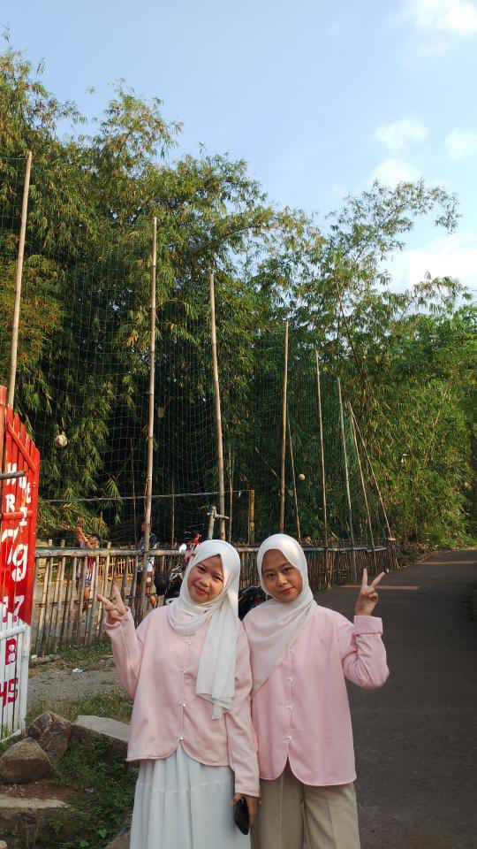
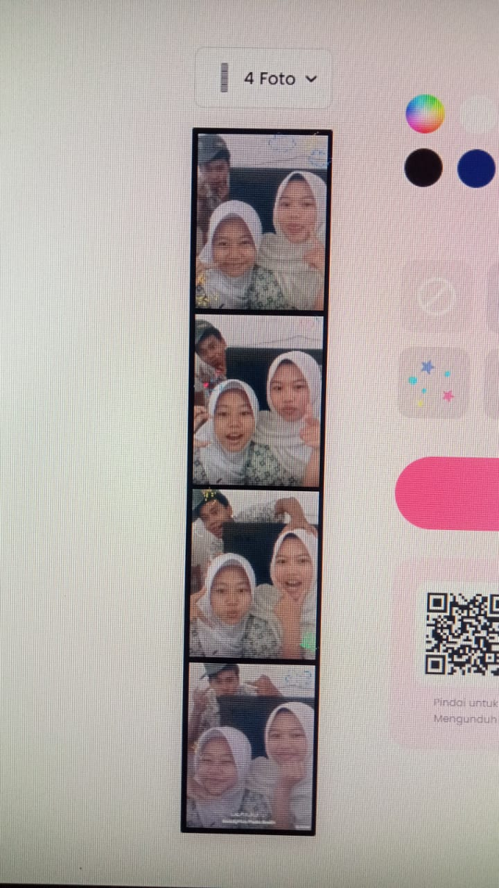
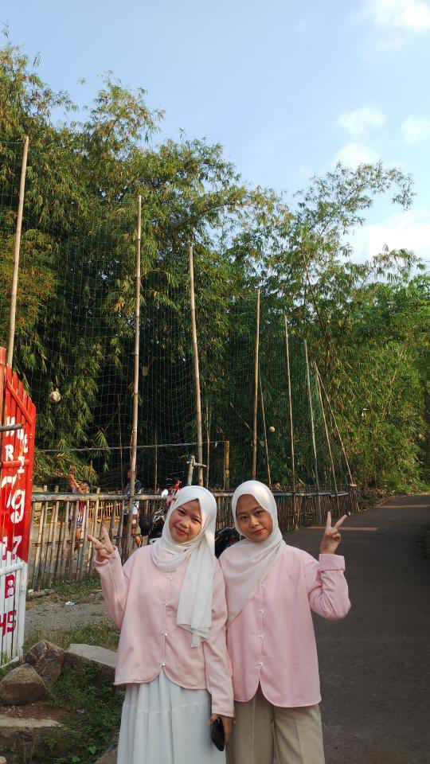
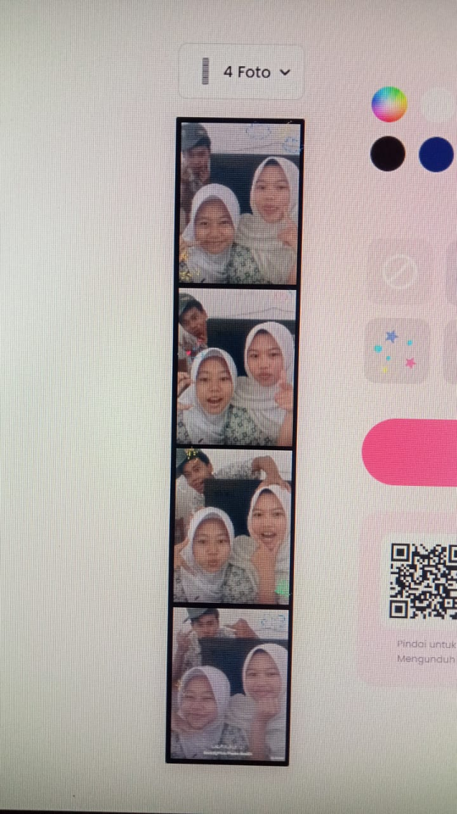
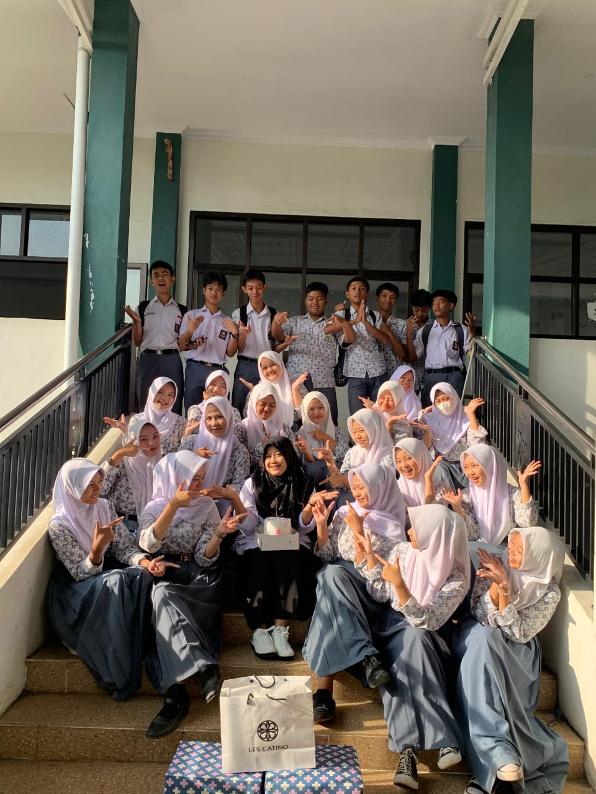
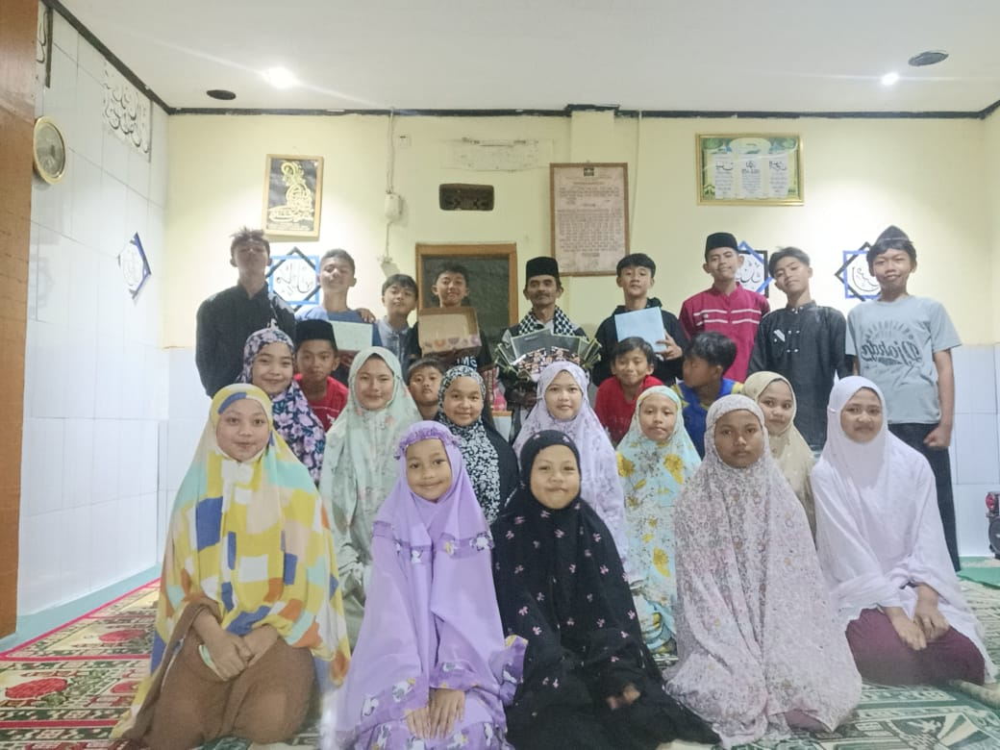
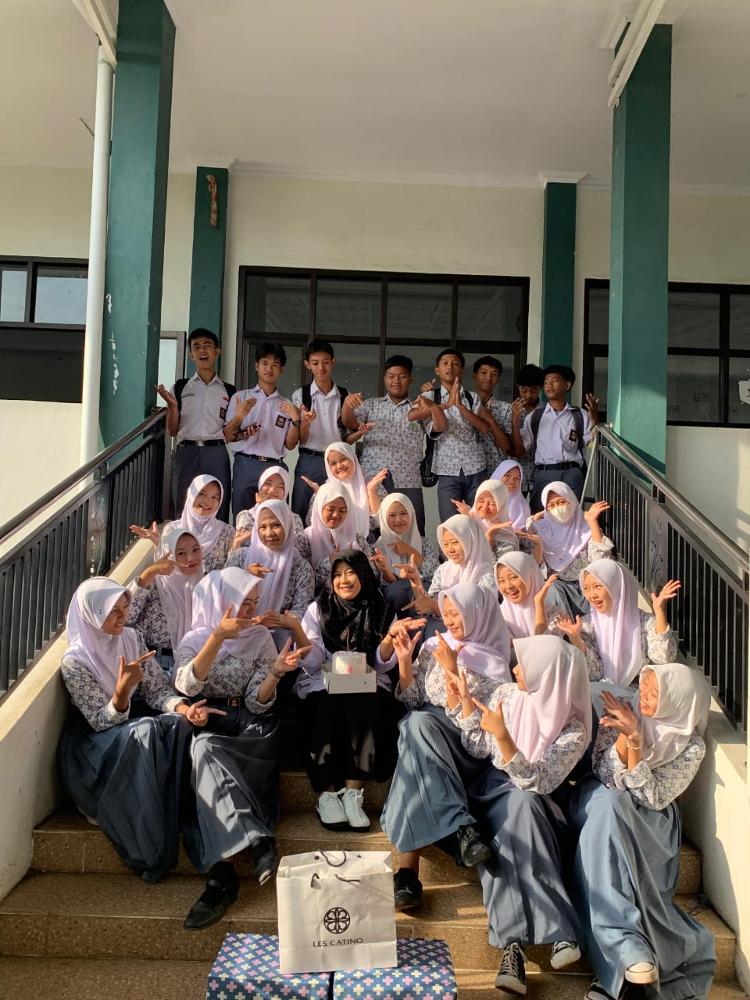
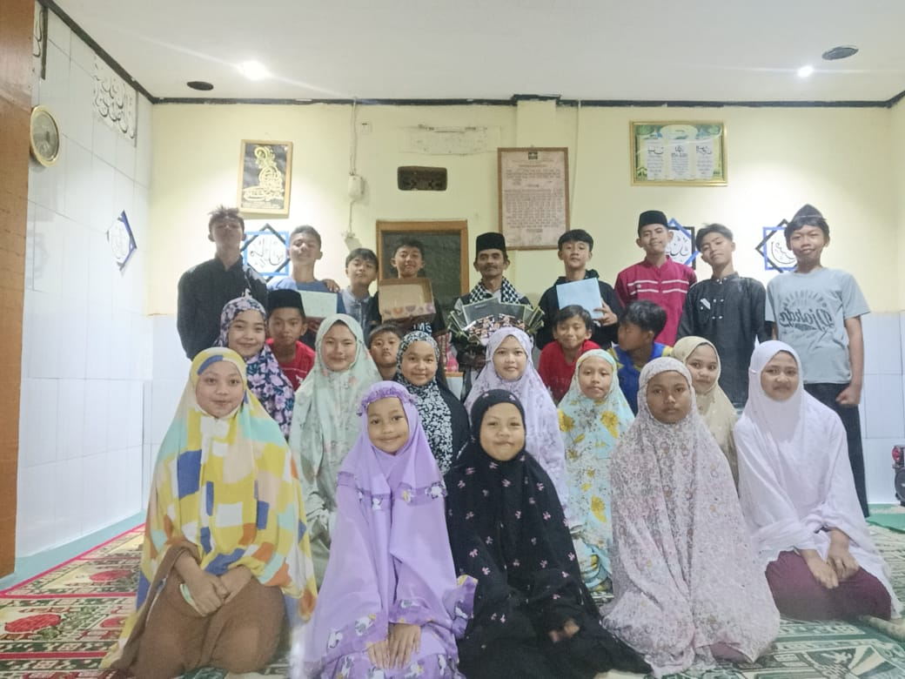

INFORMASI PRIBADI
NAMA:SELLA FAUZILAHALAMAT:KP.PANUNGGANGAN
TEMPAT TANGGAL LAHIR:GARUT 04 MARET 2008
RIWAYAT PENDIDIKAN
PAUD SAFIR DUNGUSIKU
SDN 3 DUNGUSIKU
SMP NEGERI 2 LEUWIGOONG
SMAN 10 GARUT
HOBI
-MARATON DRAKOR maraton drakor adalah berbagai keuntungan yang diperoleh dari kebiasaan menonton drama Korea secara berkelanjutan, seperti memberikan hiburan dan relaksasi, meningkatkan pemahaman emosi dan empati, menambah kosakata serta wawasan budaya Korea, memberi inspirasi, mengasah kemampuan analisis cerita, dan mempererat hubungan sosial dengan sesama penggemar.-MENDENGARKAN MUSIK mendengarkan musik K-Pop adalah berbagai keuntungan yang diperoleh dari menikmati lagu-lagu Korea, seperti meningkatkan mood dan mengurangi stres, memberi energi dan motivasi, membantu belajar bahasa serta memahami budaya Korea, menumbuhkan kreativitas, mempererat rasa kebersamaan dalam komunitas, dan membantu relaksasi maupun fokus.
ALASAN MENYUKAI K-POP
karena musiknya yang beragam dan catchy, konsep visual dan koreografi yang menarik, serta idol yang berbakat dan karismatik. Selain itu, kisah perjuangan para idol,interaksi yang dekat melalui berbagai konten, dan komunitas fandom yang solid membuat penggemar merasa terhubung, terinspirasi, dan terhibur.mereka juga adalah rumah ke dua setelah keluarga karena mereka saya bisa tau cara mencintai diri sendiri (love your self)tanpa di cintai orang lain,dan berkat mereka juga saya bertahan hiduplife isn't about finding yourself.life is about creating yourself .And i'm creating the best version of myself with a little bit of k-pop and a lot of dreams
IDOL STAN

"COLOR OUTSIDE THE LINES" (CORTIS) adalah mereka adalah rookie monster dari BigHit Music yang debut dengan rekor penjualan tinggi, langsung masuk Billboard 200, terlibat penuh dalam produksi musik & koreo, punya konsep "mewarnai di luar garis" yang autentik, serta punya member blasteran, menjadikan mereka grup yang berani beda dan inovatif sejak awal debut.
ALPHA DRIVE ONE (ALD1) adalah grup K-Pop jebolan survival show Boys II Planet, debut resmi Januari 2026, dikontrak 5 tahun, punya member internasional (Korea, China, Australia), Leo jadi leader, dan fandomnya ALLYZ (sekutu/teman). Mereka sudah rilis pre-debut single "FORMULA" di MAMA Awards 2025, dan terkenal karena interaksi unik dengan warganet Indonesia yang menyamakannya dengan Aldi Taher.
ENHYPEN is a South Korean boy band formed in 2020 through the Mnet survival show I-LAND. The group consists of seven multinational members: Heeseung, Jay, Jake, Sunghoon, Sunoo, Jungwon, and Ni-Ki. They debuted on November 30, 2020, with the album Border: Day One and are managed by Belift Lab
MY GALERI

 



 


